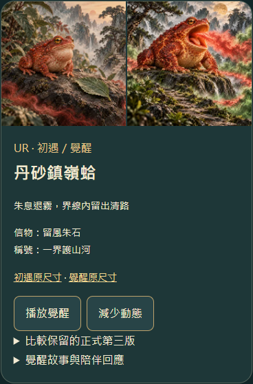
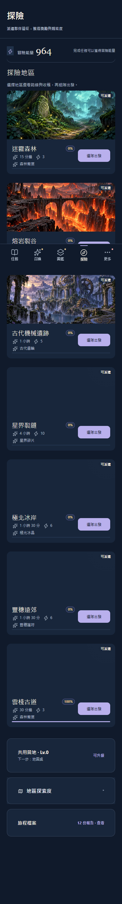

QuestNote · 新功能整包驗收
覺醒之後，同行更遠
V3.5.5：二十隻覺醒系統、張口朱息的丹砂鎮嶺蛤，以及重新繪製的雲棧古道。已接入正式V3.5.4「今日習慣」，目前仍在預覽；正式站尚未發布本包。
這次要確認的圖片用途


二十隻初遇相使用前版候選圖；其餘十九隻的覺醒相沿用現行第三版，鎮嶺蛤覺醒相使用本次新張口圖。未覺醒角色及抽卡结果仍使用第三版。原圖、舊SVG與歷史核准紀錄均保留。請重新確認這次雙形態用途、新蛤圖、二十段演出與新地圖。
玩家流程
已擁有角色、親密Lv.5且已領取Lv.5故事即可接下試煉。接下後完成三筆任務／習慣，再領取一次該角色參队、接下後出發的雲棧古道派遣獎勵。一次進行一隻，可暫停、換角、恢復，原同行約定可並行。
完成試煉保證取得專屬信物。儀式消耗信物一枚與松香行旅糰一份；所有稀有度相同。完成後解鎖雙形態、專屬篇章、稱號、陪伴回應與可重播演出。稱號自行裝備；圖鑑、原圖、詳情與首頁採角色保存的形態。抽卡機率、稀有度與派遣收益維持原設定。
三UR約五秒，其餘約三秒；可略過、重播，減少動態約0.6秒。試玩存檔已準備蛤覺醒、雕待儀式、猿試煉2/3，供直接操作；只影響本機隔離副本。
驗收結果
| 範圍 | 實測 |
|---|---|
| 邏輯與來源 | 274項Node檢查、語法、完整內容與圖片驗證通過 |
| 覺醒 | 11組實際App檢查；門檻、去重、暫停換角、同行並行、派遣參隊、信物、今日習慣 |
| 交易與備份 | 中斷回滾、跨分頁單次儀式、材料不足、舊新備份、錯誤備份拒絕、雙形態保存與稱號 |
| 美術與演出 | 20組圖片、40場正常／減少動態演出；320px、略過、重播與查看原尺寸 |
| 原功能 | 保底、重複角色、工坊送禮、20隻專長、古道五里程碑、4章同行故事與公告保留 |
| 更新與離線 | 12組worker/profile驗證；正式3.5.4→候選3.5.5存檔保留、舊快取清除、離線圖片與操作 |
| 公開預覽 | Pages成功；192個HTTPS檔案雜湊符合，80張形態圖片與地圖載入、演出和離線重載通過 |
綁定整包的證據與檔案雜湊 · 發布門檻狀態 · 十四份既有資料保留核對 · HTTPS實測
這些是桌面Chromium與隔離環境的驗證；實體手機、已安裝PWA仍可依裝置另行檢查。
發布前最後一步
人工整包驗收與「可以發布」須綁定上述識別。這次新圖、新用途、演出及地圖尚未記錄人工核准；之前V3.5.3卡池的同意不能代替本包。取得同意後才合併來源與部署已核對的production產物，接著驗證正式HTTPS、Pages、存檔與快取更新。